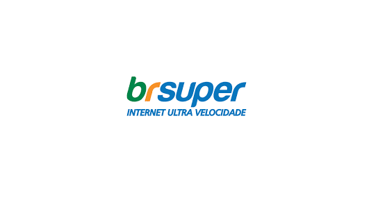

Comunicação Unificada
Conheça como a BR Super, provedora de internet em expansão, alcançou eficiência operacional através da plataforma de comunicação unificada da Native.

Os Desafios
Integração de Sistemas
A BR Super enfrentava dificuldades em integrar diferentes frentes de atendimento em uma solução única e coesa.
Complexidade Operacional
Sistemas fragmentados tornavam a operação complexa e dificultavam a facilidade de uso para a equipe.
Crescimento Acelerado
A empresa precisava de uma plataforma que acompanhasse o ritmo acelerado de crescimento de sua base de clientes.
Visibilidade de Dados
Faltavam agilidade e clareza nas informações para decisões estratégicas escaláveis e efetivas.
A Solução
A Native foi escolhida como parceira estratégica pela confiança e consistência da plataforma. A implementação trouxe comunicação unificada, eliminando ferramentas dispersas e complexas que dificultavam a operação.
Com interface simples e intuitiva, todos os colaboradores conseguem usar a plataforma facilmente. O suporte contínuo de alta confiabilidade garante estabilidade mesmo durante períodos de alta demanda, permitindo que a BR Super cresça sem preocupações.
Comunicação Unificada
Eliminou ferramentas dispersas e complexas
Interface Intuitiva
Simples e fácil de usar para toda equipe
Suporte Contínuo
Alta confiabilidade e estabilidade garantida
Escalabilidade
Cresce com o negócio sem problemas
Os Resultados
Sobre a BR Super
A BR Super é uma provedora de internet em expansão que atua no segmento ISP (Internet Service Provider), buscando constantemente oferecer modernidade, operação simplificada e recursos que garantam estabilidade para toda a equipe de atendimento e suporte.
Com a adoção da plataforma de comunicação unificada da Native, a BR Super conseguiu eliminar a complexidade de sistemas fragmentados, permitindo que sua equipe se concentre em oferecer o melhor serviço aos clientes enquanto a empresa continua seu ritmo acelerado de crescimento.
Segmento ISP
Provedora de internet em expansão
Foco Estratégico
Modernidade e operação simplificada
Pronto para Unificar sua Comunicação?
Conheça como a plataforma de comunicação da Native pode transformar sua operação
Agende uma Demonstração